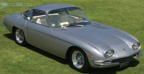
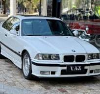

Lamborghini 350 GT
O Lamborghini 350 GT foi o primeiro carro de produção da marca
italiana, fabricado entre 1964 e 1966. Equipado com um motor V12 de
3,5 litros e 280 cv, o cupê de dois lugares ajudou a Automobili
Lamborghini a competir diretamente com a Ferrari e garantiu o sucesso
inicial da empresa.
- ano: 1964-1966
- km: 10.000
- cambio: manual

Mais informações
Ferrari 250 GTO
O Ferrari 250 GTO é um dos carros mais icônicos da história da marca
italiana, produzido entre 1962 e 1964. Com um motor V12 de 3,0 litros
e 300 cv, o modelo foi projetado para competir em corridas de GT e se
tornou um símbolo de exclusividade e desempenho. Apenas 36 unidades
foram fabricadas, tornando-o extremamente raro e valioso.
- ano: 1962-1964
- km: 5.000
- cambio: manual
Mais informações
BMW 325i
O BMW 325i é um carro esportivo de luxo fabricado pela BMW. Ele faz
parte da Série 3 da marca e é conhecido por seu desempenho, design
elegante e tecnologia avançada. O modelo 325i é equipado com um motor
potente, oferecendo uma experiência de condução emocionante e ágil.
Além disso, o interior do carro é luxuoso, com materiais de alta
qualidade e recursos modernos de conforto e conveniência.
- ano: 1990-2000
- km: 80.000
- cambio: manual

Mais informações
Hyundai HB20S Comfort
O Hyundai HB20S Comfort é um sedã compacto fabricado pela Hyundai,
conhecido por seu design moderno, eficiência de combustível e
conforto. Ele oferece uma experiência de condução agradável, com
recursos tecnológicos e segurança aprimorada.
- Motor: 1.6L 4 cilindros
- Potência: 130 cv
- Transmissão: Manual de 5 marchas ou automática de 6 marchas
-
Consumo médio: Aproximadamente 12 km/l na cidade e 15 km/l na
estrada
- Segurança: Airbags, freios ABS, controle de estabilidade
- Conforto: Ar-condicionado, direção elétrica, sistema de som
Mais informações